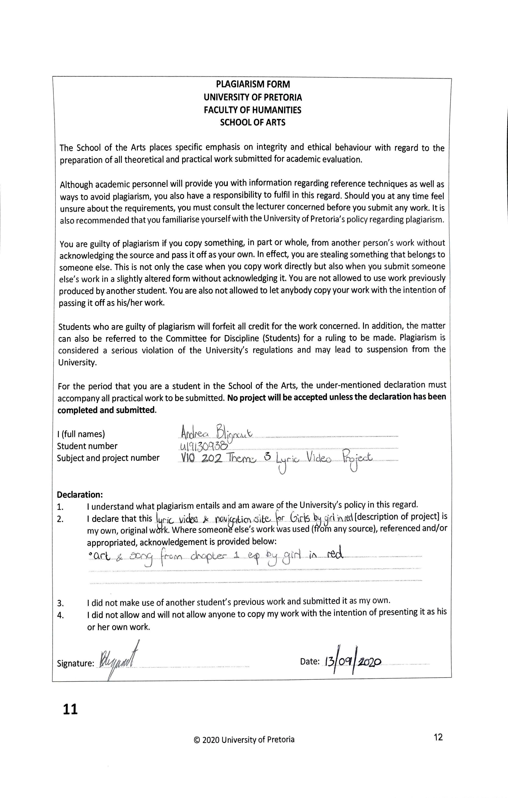

|
The colour scheme of this video was taken entirely from the original cover of girl in red's chapter one EP. The light and dark reds from the background, the white from the painted flowers, and the browns from the line art of a girl that overlays it. The light blue colour used on the navigational website is the inverse of the brown colour used for all text.
That image of the girl directly inspired the font choice of the video- because there is no actual writing on the cover of the EP, I had to choose any fonts used myself. Becuase the cover looks like a hand-drawn/painted piece, I eventually, used a slightly stylized version of my own cursive handwriting. I tried to keep as close as possible to the original look of the art of the girl- solid brown lines, drawn in ink instead of paint.
The art of the video was deisgned to emulate the rest of the cover- carefree painting and textures. That was why I animated the video using an Autodesk Sketchbook flipbook- because it was the best way to mimic the mediums used on the original cover, and furthermore the best way to create a feeling of the video being 'handmade' (because every frame is hand-drawn instead of animated by a computer).
|

|